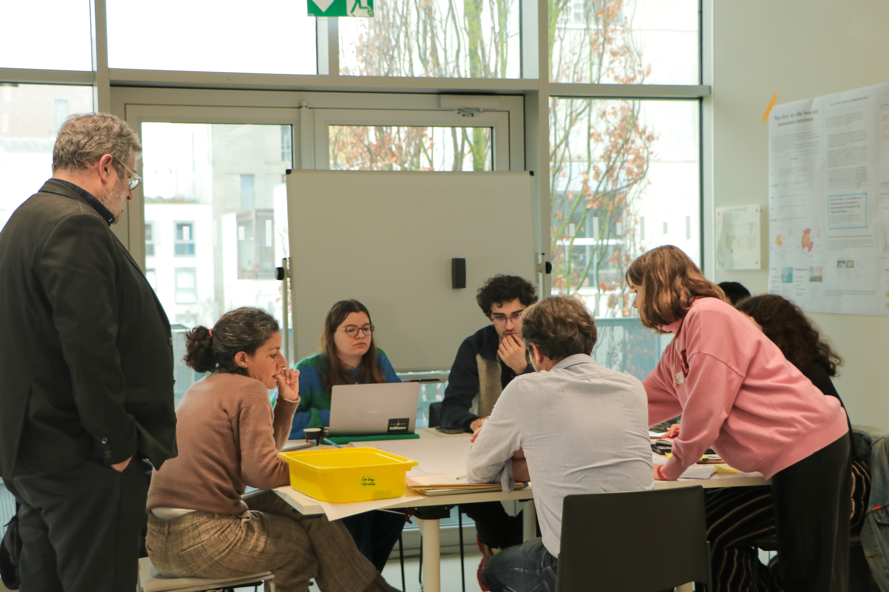

Qu’est-ce que l’Europathon ?
L’Europathon s’inspire directement du concept d’hackathon. À l’origine, l’hackathon est un événement de programmation informatique. S’inspirant de l’épreuve mythique du Marathon, les participants sont invités à travailler en équipe afin de développer un projet en un temps limité, généralement 24h ou 48h. Levier pour booster l’innovation, le concept s’est rapidement popularisé et démocratisé à d’autres domaines que l’informatique.
L’Europathon est un marathon créatif sur le thème “Changement climatique et paix civile” porté par le centre Jean Monnet. Il s’est tenu les 24 et 25 janvier 2024 à Nantes et a réuni plusieurs étudiants de différentes formations. L’objectif était d’y réfléchir à des solutions innovantes pour lutter contre le changement climatique et promouvoir la paix civile en Europe. Pour simplifier l’exercice, les étudiants devaient se positionner sur un des quatre sujets proposés.
Dialogue citoyen et vivre-ensemble : comment concilier l’urgence climatique et état de droit, démocratie et société apaisée ?
Déplacés climatiques : comment permettre de meilleures représentations et démentir certains préjugés afin d’assurer l’équilibre social ?
Comment assurer le “bien-être” des populations (notamment les plus à risque) face aux dérégulations climatiques ?
Comment assurer une juste et bonne répartition des ressources naturelles, des “biens communs” ?
Une fois les groupes constitués, nous devions nous imprégner du sujet afin de dégager une problématique. Une fois la problématique définie, nous devions réfléchir à une solution innovantes pour y répondre. Pour orienter notre réflexion dans la bonne direction - du moins celle qui semblait la plus pertinente pour l’organisation -, des outils et des méthodes de travail collaboratif nous ont été fournis. Nous avons également eu la chance de bénéficier de l’expertise de plusieurs intervenants de qualité sur les sujets abordés.
Au terme de ces deux jours, chaque groupe doit présenter sa solution devant un jury. Les critères de jugement sont la pertinence de la solution, l’originalité, la faisabilité et la qualité de la présentation
Mon expérience de l’Europathon
La problématique
Souhaitant me positionner sur un sujet qui m’était familier, j’ai choisi de travailler sur le “bien-être” des populations (notamment les plus à risque) face aux dérégulations climatiques ?. Notre première décision, fût d’affiner la problématique. En effet, il a fallu lui donner un cadrage géographique. Vivant nous-même à Nantes, nous avons décidé de nous concentrer sur cette ville.
Ensuite, il nous fallait définir les termes clés du sujet. Qu’entend-on par populations les plus à risque ? Qu’entend-on par dérégulations climatiques ? etc. Suite à plusieurs hésitations, nous nous sommes concentrés sur les personnes en grande précarité économique, les sans-abris. Méconnue et échappant souvent aux statistiques, cette partie de la population est très vulnérable aux effets du changement climatique en ville.
En effet, les sans-abris sont plus exposés aux fortes chaleurs car ils passent souvent la journée dehors. De plus, plusieurs facteurs aggravant peuvent être pris en compte comme le fait que les effectifs des associations qui s’occupent des sans-abris sont souvent réduits en été. Même au sein des personnes en grande précarité, on retrouve des inégalités face aux vagues de chaleurs puisque les femmes sont plus sensibles aux fortes variations de températures. Ainsi, les personnes sans-abris sont plus exposés que la moyenne à la déshydratation, première cause de mortalité lors des épisodes de canicule.
Ainsi, nous sommes arrivés à la problématique suivante : Comment réduire la vulnérabilité des personnes sans-abris face aux vagues de chaleurs à Nantes ?
Pour nous aider à répondre à cette problématique, nous avons pu bénéficier de l’expertise de plusieurs intervenants de Nantes Métropole (Figure 1). Ils nous ont permis de mieux comprendre les enjeux et les contraintes liés à la prise en charge des sans-abris en période de canicule.

Notre solution
Notre solution devait faire face à plusieurs contraintes. En effet, il fallait que notre solution soit adaptée aux sans-abris, qui sont souvent nomades et qui ont des difficultés à accéder aux informations. De plus, il fallait que notre solution soit inclusive, c’est-à-dire qu’elle prenne en compte les besoins spécifiques des femmes sans-abris. Enfin, il fallait que notre solution soit mobile, c’est-à-dire qu’elle puisse être utilisée partout et par tout le monde.
L’idée de la ressource solidaire est née : créer une cabine d’hygiène mobile équipée du nécessaire pour la propreté et l’hydratation. Ces cabines seraient équipées de toilettes, d’un lavabo, d’une douche mais également d’une fontaine située à l’extérieur de la douche. Deux modèles différents ont été pensés : un modèle classique et un modèle réservé aux femmes et aux enfants, équipée en plus d’une table à langer et d’un lavabo plus grand. Les cabines seront équipées en savons et shampooings, ainsi que de quoi laver ses vêtements.
Les cabines pourront facilement être déplacées et seront placées à des points stratégiques lors de distributions de denrées. Les associations organisant ces distributions informeront les sans-abris sur le dispositif. Un rapprochement auprès de ces associations est indispensable car ce sont elles le plus au courant des déplacements des sans-abris.
Une fois les distributions terminées, les cabines seront laissées quelque temps sur place, puis déplacées à nouveau lors d’une nouvelle distribution. Elles pourront également être placées à des endroits où se rendent beaucoup les sans-abris lors de grandes chaleurs comme les parkings des galeries Atlantis et Paridis qui sont ombragés.
Sur les parois extérieures des cabines de douches, on pourra trouver des informations importantes pour aider les sans-abris lors de fortes chaleurs telles que la localisation des fontaines, des îlots de fraîcheur et des centres d’accueil présents sur Nantes Métropole.
En ce qui concerne le financement, nous avons pensé à plusieurs pistes. Premièrement, il pourrait être accordé par le FSE+, et notamment la priorité 5 : Aide matérielle aux plus démunis qui peut cofinancer jusqu’à 90% du projet. Ensuite, le projet pourrait faire appel au Nantes City Lab, un dispositif de la ville de Nantes qui accompagne les porteurs de projets innovants.

En tant que chef de projet, j’ai dû soutenir notre projet selon la méthode du speach. Si la présentation orale ne sait pas passée comme prévu suite à une incompréhension liée à la présence ou l’absence de note pour s’aider, notre solution a été bien reçue par le jury. Nous avons obtenu le 3ème prix du jury (sur 6 groupes). Notre réflexion a également été appreciée par Nantes Métropole qui a ensuite décidé de mener une étude de faisabilité sur le projet de douches mobiles.

Remerciements
Je tiens à remercier l’ensemble de l’organisation de cette Europathon et en particulier Clara et Léa de la Sampa pour leur soutien et leur aide. Je remercie également les intervenants de Nantes Métropole pour leur expertise et leur disponibilité. Enfin, je remercie mes coéquipiers pour leur implication et leur travail.